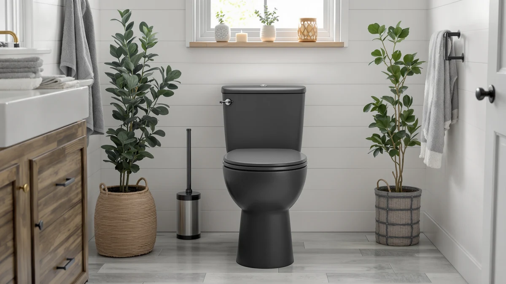

One Piece vs Two Piece Toilets Pros and Cons: Which Is Better? (2026)
Prices and picks verified as of September 2026. Independent, reader-supported reviews.


Things to Know Before You Buy
- The fused tank is the whole story. A one-piece toilet molds the tank and bowl into a single piece of vitreous china, which removes the seam that collects grime on a two-piece model.
- Two-piece toilets cost less to buy. Expect to pay $80 to $150 less for a comparable flush system, since manufacturers can produce the tank and bowl separately and ship them flat.
- Weight changes the install. A one-piece toilet often weighs 100 pounds or more, so a two-person carry and install is standard, while a two-piece toilet's split weight makes a solo install realistic.
- Repairs favor the two-piece design. Lifting off a separate tank gives direct access to the fill valve and flush valve, something a fused one-piece unit does not offer.
- Rough-in size matters more than the style. Nearly every US toilet uses a 12-inch rough-in regardless of one-piece or two-piece construction, so measure before you shop either category.
Weighing one piece vs two piece toilets pros and cons comes down to three practical questions: how much you want to spend upfront, how much cleaning you want to do later, and how heavy a fixture your bathroom floor and stairwell can handle. Both styles use the same water lines, the same rough-in standards, and the same flush technology, so the differences are almost entirely about construction and maintenance rather than performance.
We compared specs, pricing, and verified owner reviews across both categories to lay out where each one earns its keep. Neither style is the objectively "better" toilet. A one-piece model tends to win in bathrooms where easy cleaning and a compact look matter, while a two-piece model still makes sense for buyers watching a renovation budget or planning to do their own repairs.
Quick Answer
If cleaning ease and a streamlined look top your list, a one-piece toilet like the DeerValley Elongated One Piece Toilet is worth the extra cost. If you're working with a tight budget or want a toilet you can service yourself without much trouble, a two-piece model still holds up as the practical choice. Most homeowners doing a standard bathroom update land on one-piece, since the price gap has narrowed enough that the cleaning advantage tips the scale.
What is One Piece?
A one-piece toilet molds the tank and bowl from a single piece of vitreous china, fired together in one kiln run instead of being cast and bolted as two parts. That construction is the core of the one piece vs two piece toilets pros and cons debate: there's no horizontal seam between tank and bowl, no bolts to seep water, and no gap where dust and grime settle.
Because the whole unit is one casting, one-piece toilets sit lower and have a more compact overall footprint than most two-piece models, which is why they show up often in modern bathroom remodels and smaller powder rooms. The trade-off is weight. A one-piece toilet typically runs 100 to 130 pounds, compared with 70 to 90 pounds split across a two-piece toilet's tank and bowl, so delivery and installation both require more care.
Manufacturers also charge more for the single-mold process, since a defect anywhere in a large casting means scrapping the entire unit rather than only a tank or a bowl. That manufacturing cost is reflected directly in the shelf price, which tends to run $80 to $150 higher than a comparable two-piece toilet with the same flush rating.
What is Two Piece Toilets Pros And Cons?
A two-piece toilet separates the tank and bowl into two cast pieces that bolt together on-site, using a rubber gasket to seal the connection between them. This is the design most US homes had before one-piece toilets became mainstream, and it remains the default in budget renovations, rental properties, and new-construction developments where cost per unit matters.
Splitting the casting into two smaller pieces lowers manufacturing cost and makes each part lighter to ship and carry, which is why two-piece toilets consistently undercut one-piece models on price. A plumber or a confident DIYer can also carry the tank and bowl up a narrow stairwell separately, something a one-piece toilet's single heavy casting doesn't allow.
The seam where the tank bolts to the bowl is the main drawback in the one piece vs two piece toilets pros and cons comparison. That gap collects dust, needs a narrow brush to clean properly, and is the spot where a worn gasket can eventually leak. None of that affects flush performance, but it does mean more maintenance over the life of the fixture.
Head-to-Head: Build Quality & Durability
Both styles use the same vitreous china body, so the material itself lasts 20 to 30 years under normal household use regardless of which one you buy. According to verified owner reviews across both categories, the fixtures rarely crack or wear out on their own; the parts that fail first are the fill valve, flush valve, and seat hinges, none of which differ by construction style.
Where durability diverges is at the seam. A two-piece toilet's tank-to-bowl gasket is a wear item, and reviewers report it needing replacement roughly every 5 to 10 years to stop a slow leak or a rocking tank. A one-piece toilet has no equivalent joint, so that particular failure point simply doesn't exist, which is a real advantage in the one piece vs two piece toilets pros and cons durability comparison.
Weight cuts the other way. Heavier one-piece units put more stress on the flange and the floor bolts during installation, and reviewers occasionally note hairline cracks near the base when a unit was set on an uneven floor or over-tightened. A two-piece toilet's lighter bowl is more forgiving of a slightly imperfect install, though a competent installer avoids this issue with either style.
Head-to-Head: Price & Value
Two-piece toilets win on sticker price across the matched flush ratings and bowl shapes we compared, typically by $80 to $150. Entry-level two-piece models start under $150, while a comparable one-piece toilet, like the VEVOR One-Piece Toilet Elongated Toilet at $202.54, sits closer to $200 to $250 before installation.
Total cost of ownership narrows that gap. A one-piece toilet's lack of a tank-bowl gasket means one less part to replace over a decade, and the smoother surface takes less cleaning product and less of your time. Neither adds up to a large dollar figure, but it's the value one-piece buyers are paying for beyond the toilet itself.
If a renovation budget is tight, the two-piece option remains the better value on price alone. If you're comparing long-term ownership rather than only the receipt, the one piece vs two piece toilets pros and cons math favors one-piece by a smaller margin than the upfront price suggests.
Head-to-Head: Use Experience
Day to day, the flush and seat feel identical between the two styles when the internal mechanism is the same, since both draw from the same tank volume and the same trapway design. Owners rarely mention a difference in flush strength tied to one-piece versus two-piece construction; the flush valve and bowl shape drive that outcome far more than how the tank attaches.
Cleaning is where the experience splits. Reviewers consistently note that wiping down a one-piece toilet takes less time because there's one continuous surface from the tank lid to the base, with no crevice to scrub separately. A two-piece toilet needs a narrow brush or an old toothbrush run along the seam every week or two to keep grime from building up.
Noise is a smaller factor worth mentioning in the one piece vs two piece toilets pros and cons comparison. A one-piece toilet's solid casting dampens the sound of the tank refilling slightly more than a two-piece tank does, since there's no air gap between tank and bowl to resonate. It's a minor difference, but apartment dwellers and light sleepers sometimes notice it.
When to Choose One Piece
Choose a one-piece toilet if you're remodeling a bathroom you plan to keep for years and want to spend less time cleaning around the base. It also fits small bathrooms and powder rooms well, since the compact, low-profile shape frees up a few extra inches of floor space compared with many two-piece tanks.
It's also the better pick for a household with a family member who has mobility concerns, since the smooth, seamless surface is easier to wipe down without needing to reach into a tight gap. If your bathroom floor and the path to it can support a heavier fixture and a two-person carry, the one piece vs two piece toilets pros and cons trade-off leans clearly toward one-piece for a primary or master bathroom.
When to Choose Two Piece Toilets Pros And Cons
Choose a two-piece toilet when the budget for the fixture itself is the deciding factor, such as a rental unit turnover, a basement bathroom, or a flip where every line item counts. The $80 to $150 you save buys flooring, paint, or fixtures elsewhere in the same project.
It's also the practical choice for a bathroom at the top of a narrow, twisting staircase, where movers can carry the tank and bowl separately instead of wrestling a single heavy casting around a landing. If you or your plumber expect to service the fill valve or flush valve more than once over the years, the two-piece design's removable tank makes that job faster every time.
Our Top Picks
If you've decided the one-piece side of the one piece vs two piece toilets pros and cons debate fits your bathroom, these three researched picks cover the editor's choice, the best value, and the premium option.

Editor's Pick
DeerValley Elongated One Piece Toilet
A well-rounded elongated one-piece toilet at $239.19, priced close enough to a two-piece toilet to make the seamless design an easy trade-off.
$239.19
Check Price on Amazon
Best Value
VEVOR One-Piece Toilet Elongated Toilet
The cheapest one-piece toilet in this comparison at $202.54, worth a look if budget is your top concern but you still want to skip the two-piece seam.
$202.54
Check Price on Amazon
Premium Choice
Lordear One Piece Toilets for
The priciest option here at $249.99, a solid choice if you want extra bowl comfort and can spend a bit more than the picks above.
$249.99
Check Price on AmazonFrequently Asked Questions
Is a one-piece or two-piece toilet better for cleaning?
A one-piece toilet is easier to keep clean because the tank and bowl are fused into a single unit with no seam where the two would otherwise bolt together. Two-piece toilets have a gap between the tank base and the bowl that collects dust and grime over time and needs regular attention with a narrow brush.
Are one-piece toilets more expensive to install than two-piece toilets?
The toilet itself usually costs more, but installation labor is similar for both styles since a plumber sets the flange, seals the wax ring, and levels the base the same way either way. The bigger cost difference comes from the unit price, where two-piece toilets are typically $80 to $150 cheaper for a comparable flush system.
Do one-piece toilets last longer than two-piece toilets?
Both styles are made from the same vitreous china and last 20 to 30 years under normal use, so longevity comes down to the flush mechanism and seat hardware rather than the one-piece or two-piece construction. Fewer bolted joints on a one-piece model do mean fewer places for a seal to fail over time.
Can a one-piece toilet fit where a two-piece toilet used to be?
In most cases, yes, as long as the rough-in distance matches. Nearly all US toilets use a 12-inch rough-in, so measuring from the wall to the center of the floor bolts before you shop is the step that prevents a return trip to the store.
Which is easier to fix, a one-piece or two-piece toilet?
Two-piece toilets are easier to repair because the tank lifts off on its own, giving a clear view of the fill valve and flush valve without disturbing the bowl. On a one-piece toilet, replacing internal parts usually still works from the top, but the fused design leaves less room to maneuver tools.
Final Verdict
Weighing one piece vs two piece toilets pros and cons comes down to what you value more: a lower purchase price or less time spent cleaning around the base. For most bathroom remodels, a one-piece toilet like the DeerValley Elongated One Piece Toilet earns its higher price through easier maintenance and a more compact fit. If your project is budget-driven or you want a fixture you can service yourself without much hassle, a two-piece toilet remains the sound, proven choice.